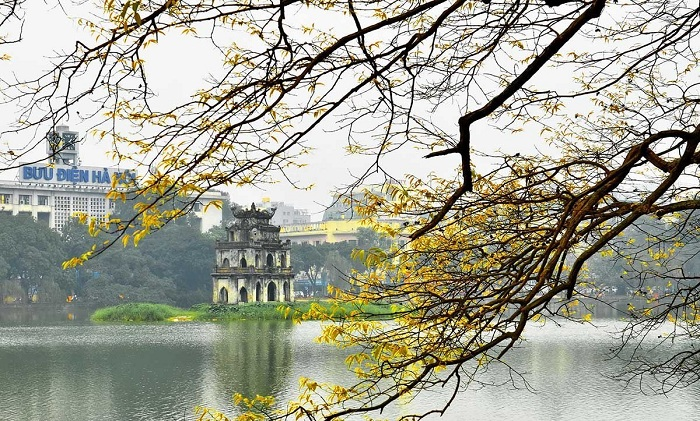
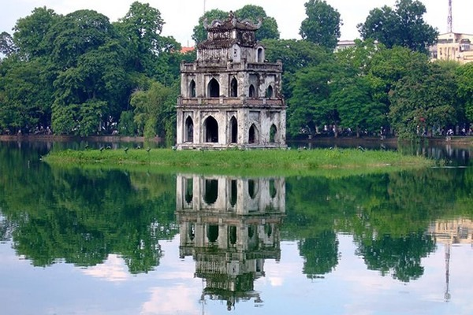
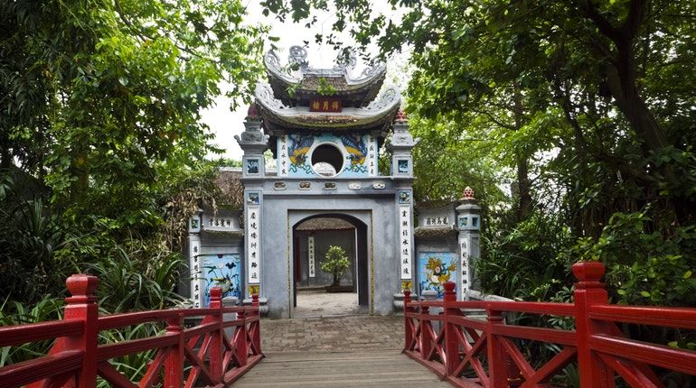
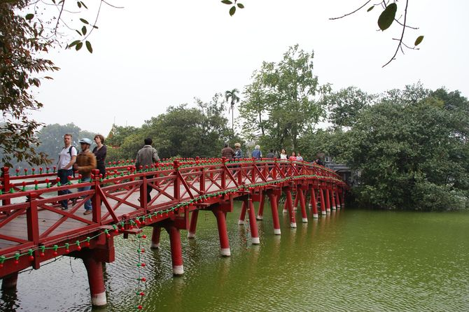
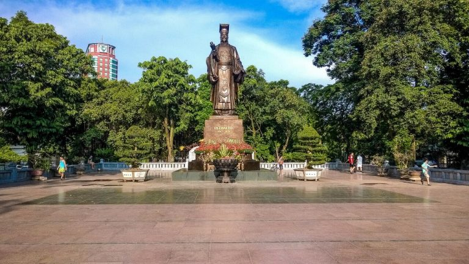
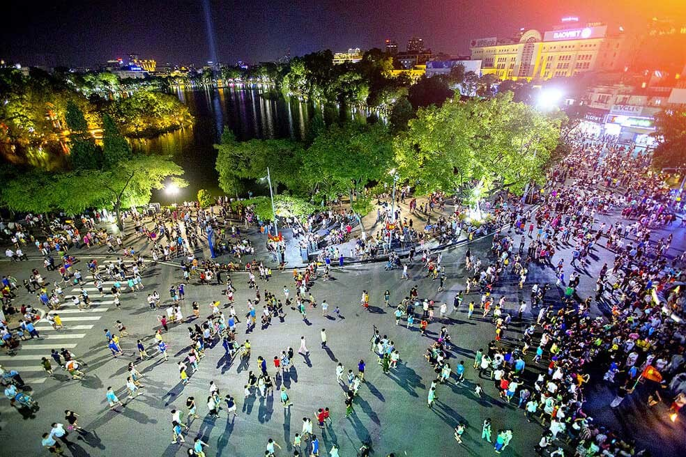

Hoan Kiem Lake (Ho Guom) in Hanoi
Hoan Kiem Lake (Sword Lake) is not only a cultural and historical symbol of the capital but also a favorite destination of domestic and foreign tourists when traveling to Hanoi. Before coming to admire the enchanting beauty and explore the complex of relics of Hoan Kiem Lake, do not forget to refer to the detailed information about Hoan Kiem Lake (Sword Lake) in Hanoi. down here.
Location of Hoan Kiem Lake
Hoan Kiem Lake (Sword Lake) is located in the heart of Hoan Kiem district, so it is very convenient for tourists to come to admire the scenery and discover many interesting experiences at any time of the day.
Hoan Kiem Lake, also known as Sword Lake, is located in the heart of Hanoi capital and is surrounded by 3 streets Hang Khay - Le Thai To - Dinh Tien Hoang. Because it is located in a prime location, it is a connection between the old town such as Hang Ngang, Hang Dao, Cau Go, Luong Van Can... and the Western quarter are Church, Trang Thi, Hang Bai, Trang Tien, Hang. Tray... so Hoan Kiem Lake attracts many domestic and foreign tourists to visit and explore during their trip to Hanoi.
Hoan Kiem Lake is located in the heart of the capital, so it is very convenient for tourists to visit and explore.
History of Hoan Kiem Lake
The lake has existed for a long time, several thousand years ago, but before being officially named Hoan Kiem, the lake had many names associated with different stories such as the name of Luc Thuy lake because of the color of the lake's water. Blue all year round, Thuy Quan lake because this is the place where the court used to review sailors…
Sword Lake has always accompanied the development history of the Vietnamese nation from the past to the present.
The name Hoan Kiem officially appeared in the early 15th century associated with the legend that King Le Thai To returned the treasure sword to the Divine Turtle after borrowing a sword to fight, defeating the Minh invaders, officially becoming king and establishing the dynasty. Le prosperity. Legend has it that, when Le Loi stood up to lead the Lam Son uprising in Thanh Hoa against the Ming army, he accidentally caught the sword Thuan Thien. Thanks to this precious sword, he won consecutive battles, ascending the throne in early 1428. During a boat trip with the court on Luc Thuy lake, suddenly a golden turtle emerged. When the king pointed his sword, the turtle took his sword and dived to the bottom of the lake and did not come up again. Thinking that it was God's will to lend a sword to fight the enemy, but now the world is at peace, so he sent a turtle to ask for a sword. Since then, the lake was renamed Hoan Kiem Lake. However, around the end of the 16th century, Lord Trinh divided the lake into two parts left and right, named Vong. Then in 1884, Huu Vong lake was filled by the French to expand the capital, while Ta Vong lake was kept, which is Hoan Kiem lake (Sword lake) today.
Transportation to Hoan Kiem Lake
If tourists stop to rest at motels, hotels around the old town area, just a few steps away, they can freely explore the beautiful tourist attractions in Hanoi such as Hoan Kiem lake, Ngoc Son temple, etc. Hoan Kiem Lake walking street… In case, visitors who are far from the center can travel by other public transport such as taxi or bus. The bus routes that go through Hoan Kiem Lake that visitors can refer to are number 09, number 14 and number 16 with a frequency of 15-20 minutes/trip and operating time from 5:05 to 21:05. As for taxis in Hanoi, to avoid being hacked, visitors should ask the fare in advance and don't forget to choose reputable taxi companies such as Mai Linh, Thanh Cong...
There are many means of transport for visitors to choose to move to Sword Lake.
Destinations not to be missed in Hoan Kiem Lake
Ngoc Son Temple: Ngoc Son Temple is one of the destinations not to be missed when traveling to Hanoi. Located on an island to the north of Hoan Kiem Lake, Ngoc Son Temple is connected to the shore by the striking bright red painted The Huc Bridge. Coming to Ngoc Son Temple, visitors can not only admire the masterpiece architecture imprinted with nostalgic time traces, enjoy the panoramic view of the sparkling Sword Lake, but also have the opportunity to learn about the culture as well as the ancient cultures. Little known story associated with the history of the temple.
Ngoc Son Temple - An architectural masterpiece in the land of the period.
The Huc Bridge: Along with Ngoc Son Temple, The Huc Bridge is a symbol of the charming beauty of Hoan Kiem Lake in general and Hanoi capital in particular. With a unique construction architecture and many cultural and historical values, The Huc Bridge has become a must-see destination for every visitor when traveling to Hanoi. When it was first started, The Huc Bridge had a curved design in the shape of a shrimp, made of very primitive wood and painted red - the color of life, prosperity and prosperity. Legend has it that at the end of the 19th century, the bridge was broken and newly built with reinforced cement legs, wooden floors and railings and still retains its characteristic red color.
The Huc Bridge's name means "the place where the morning sun shines".
Ly Thai To flower garden and monument: The statue of King Ly Thai To is located at Ly Thai To flower garden, Dinh Tien Hoang street, Hoan Kiem district, the center of Hanoi capital. This work was built to commemorate, honor to honor King Ly Thai To - who laid the foundation to build Thang Long citadel. Not only is it an architectural work of historical value, the flower garden and Ly Thai To monument is also a favorite destination of locals and tourists every late afternoon. After visiting the destinations in the Ngoc Son temple ruins, visitors can walk here to see the peaceful life of the people in the capital, to feel a very different Hanoi from the crowded image. common hustle and bustle.
Ly Thai To monument - A favorite destination of locals and tourists.
Thang Long Water Puppet Theater: This is one of the traditional puppet theaters still operating to this day and always brings to the audience colorful performances of impressive traditional art. The unique water puppet shows are not only loved by tourists and locals, but also become famous all over the world and attend many art festivals around the world.

Visitors should book tickets in advance because the theater is always very crowded.
Hoan Kiem Lake Walking Street: Although only officially operating for more than 1 year, the pedestrian street around Hoan Kiem Lake has become an ideal destination for many people in the capital as well as tourists from all over the world who come to Hanoi every year. weekend. According to Hanoi travel experience, Hoan Kiem Lake is most crowded after about 7 pm on Saturday and Sunday. When the city lights up, suddenly the pedestrian street is crowded with people with all kinds of exciting and attractive games, cultural and artistic activities. The most typical is the street music performances with all kinds of genres such as saxophone, flute, violin, cheo, cai luong, EDM music, rock... The feeling of walking leisurely in the open space. dust, car horns, letting go of your favorite songs and tunes is really nothing better. In addition, the folk and modern games are very interesting such as eating mandarin umbrellas, jumping rope, playing volleyball ... not only make the children but also young people and the elderly extremely interested. Besides many exciting activities, in a certain corner of the pedestrian street, there are still spaces with many nostalgic features of old Hanoi with stalls selling to he, star lights, and street vendors full of old gifts and cakes.
Ho Guom walking street is very crowded on weekend evenings.